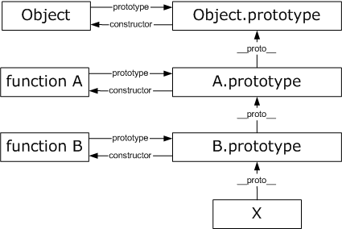

This workshop has absolutely nothing to do with prototype.js library !!
Hopefully, you will know why prototype.js library is called "prototype" at the end of this lecture :)
Defining a Class
Constructor
A new JavaScript class is defined by creating a simple function.
A "constructor" in JavaScript is just a function that happens to be called with the new operator.
Constructor - example 2
Prototype
The prototype property allows you to add properties and methods to an object.
Prototype - example 2
Every JavaScript object has an internal property called Prototype. If you create a new object via new Func(), the object's Prototype property will be set to the object referenced by Func.prototype.
Object vs Class
Prototype Chain
note: __proto__ isn't working in all browsers, it's used here just for presentation purposes
Prototype Chain

Native objects
All objects in JavaScript are descended from object "Object", so all objects inherit methods and properties from Object.prototype.
Inheritance - extend class
Object.create()
New age method. Creates a new object with the specified prototype object and properties.
Bad practice: Extension of native prototypes
One mis-feature that is often used is to extend Object.prototype or one of the other built-in prototypes.
This technique is called monkey patching and breaks encapsulation. While used by popular frameworks such as Prototype.js, there is still no good reason for cluttering built-in types with additional non-standard functionality.
The only good reason for extending a built-in prototype is to backport the features of newer JavaScript engines; for example Array.forEach, etc.